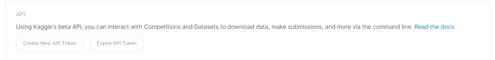
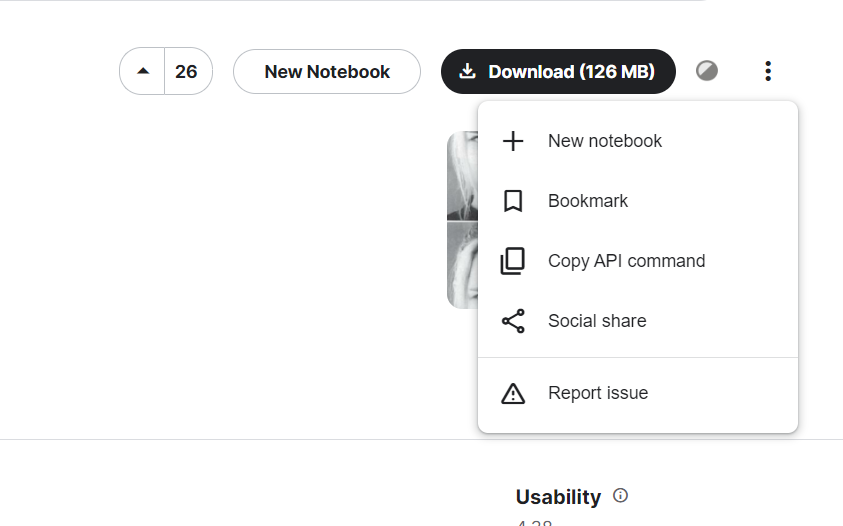
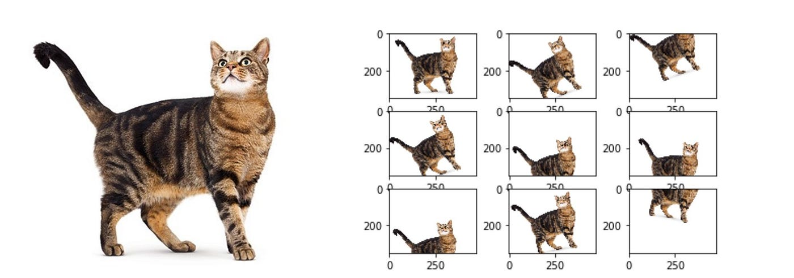

Mango leaf disease classifier using CNN
DownloadObjective
In this ML Tutorial, we will build a Mango leaf disease classifier to classify images to 8 classes : 'Anthracnose', 'Bacterial Canker', 'Cutting Weevil', 'Die Back', 'Gall Midge', 'Healthy', 'Powdery Mildew', 'Sooty Mould'. dataset. We will cover everything from scratch from preprocessing to building model and predicting.
Contents
To build a CNN deep learning classifier we need to follow these steps addressed below:
- Prepare the Dataset
- Preprocessing the data set
- Building CNN models
- Evaluation/Prediction
- Technical challenges
Preparing the dataset
Since we are using google collab and our dataset is in kaggle, here is the best way to setup your dataset to avoid large downloading and uploading time.
- Mount google collab to your drive(make sure you have available space in your drive).
- create your kaggle account, navigate to my account and scroll to kaggle api key. 
- Download kaggle api json file, create a folder named kaggle in drive and upload it in the folder.
- Run these commands in your to set enviromental variable and change directory
- Now go to your favorite dataset url in kaggle, click on the three dots on the right and select api download command 
- Run the command to download the dataset in your drive throught collab and then unzip using the below command
- Now you have folder paths of the dataset to your drive from collab.
from google.colab import drive
drive.mount('/content/drive')
import os
os.environ['KAGGLE_CONFIG_DIR']='/content/drive/MyDrive/Kaggle/'
%cd '/content/drive/MyDrive/Kaggle/'
!kaggle datasets download -d samaneheslamifar/facial-emotion-expressions
!unzip \*.zip && rm *.zip
Now that we have the dataset ready, we have to generate a dataloader for our model. We should understand that we also need to compose our tranform function to do operations on our data to help our model extract features from the images as much as possible. The data path variable is the path to your dataset folder.
from tensorflow.keras.preprocessing.image import ImageDataGenerator
train_ds = datagen.flow_from_directory(
data_path,
target_size=(320, 240),
batch_size=32,
class_mode='categorical',
subset='training'
)
val_ds = datagen.flow_from_directory(
data_path,
target_size=(320, 240),
batch_size=32,
class_mode='categorical',
subset='validation'
)
test_ds = datagen.flow_from_directory(
data_path,
target_size=(320, 240),
batch_size=32,
class_mode='categorical',
)
Image Preprocessing
Before creating the model, we need to preprocess the images i.e, scaling, resizing, flipping and rotating the images. When we transform/preprocess the images and the orientation and form of the image change, it will help out CNN model to learn important features in more generalized fashion from the images and will not get adapted to problems like shift invariance. Below I created 2 algorithms for preprocessing, one which removes all symbols in the reviews, another one to remove rare words which might affect our models accuraacy.

datagen = ImageDataGenerator(
rescale=1./255,
validation_split=0.2
rotation_range=20,
width_shift_range=0.2,
height_shift_range=0.2,
horizontal_flip=True,
)
- Rescaling: converting int8 to float32 images i.e., 0-255 to 0-1.0 .
- rotation_range: rotating images to limit of 20, to tackle shift invariance so that our model generalizes all data.
- shift range: shifting the image in terms of x and y axis to tackle shift invariance.
- horizontal_flip: to flip images on the y axis randomly
Building CNN Models
We are going to build 3 CNN models, to classify mango leafs into 8 classes.
- First, we will build a simple CNN algorithm with 9 layers
- we will add more complexity to the same CNN architecture and train
- Lastly, we will import a pre-trained model to compare our model with tranfer learning approach.
This is a simple CNN algorithm with input_shape=(320,240,3), with 32,64,64 and 128 filters on each convolution layer with 2 dense layers of 128 and 8 with relu and softmax respectively. This model is an example of Underfitting, while training the model tried to learn the images and failed to learn properly since the model was not complex enough, or in other words, not enough degrees of freedom, it is not able to bend the space in finite dimensions that will be able to classify the given dataset.
model = tf.keras.models.Sequential()
model.add(tf.keras.layers.Conv2D(32, (3, 3), activation='relu', input_shape=(320,240,3)))
model.add(tf.keras.layers.MaxPooling2D((2, 2)))
model.add(tf.keras.layers.Conv2D(64, (3, 3), activation='relu'))
model.add(tf.keras.layers.MaxPooling2D((2, 2)))
model.add(tf.keras.layers.Conv2D(64, (3, 3), activation='relu'))
model.add(tf.keras.layers.MaxPooling2D((2, 2)))
model.add(tf.keras.layers.Conv2D(128, (3, 3), activation='relu'))
model.add(tf.keras.layers.MaxPooling2D((2, 2)))
model.add(tf.keras.layers.Flatten())
model.add(tf.keras.layers.Dense(64, activation='relu'))
model.add(tf.keras.layers.Dense(8, activation='softmax'))


This is a little complex CNN algorithm with an attempt to regularize the weightsd with input_shape=(320,240,3), with 32,64,128 and 256 filters on each convolution layer with 3 dense layers of 512, 256 and 8 nodes with relu and softmax respectively. This model is an example of good learning algorithm , while training the model tries to learn the images and picks up some information without overlearning since the model was a little complex , or in other words, just enough degrees of freedom, it is able to bend the space in finite dimensions that will be able to classify the given dataset but not good enough that completly classifies all images.
model = tf.keras.models.Sequential()
model.add(tf.keras.layers.Conv2D(32, (3, 3), activation='relu', input_shape=(320, 240, 3)))
model.add(tf.keras.layers.MaxPooling2D((2, 2)))
model.add(tf.keras.layers.Conv2D(64, (3, 3), activation='relu'))
model.add(tf.keras.layers.MaxPooling2D((2, 2)))
model.add(tf.keras.layers.Conv2D(128, (3, 3), activation='relu'))
model.add(tf.keras.layers.MaxPooling2D((2, 2)))
model.add(tf.keras.layers.Conv2D(256, (3, 3), activation='relu'))
model.add(tf.keras.layers.MaxPooling2D((2, 2)))
model.add(tf.keras.layers.Flatten())
model.add(tf.keras.layers.Dense(512, activation='relu'))
model.add(tf.keras.layers.Dropout(0.5))
model.add(tf.keras.layers.Dense(256, activation='relu'))
model.add(tf.keras.layers.Dropout(0.5))
model.add(tf.keras.layers.Dense(8, activation='softmax'))


Transfer learning with VGG16, This is a very complex CNN algorithm with input_shape=(320,240,3), with many convolution layer and dense layers with output of 8 nodes with softmax. This model is an example of an Overfitting algorithm , while training the model tries to learn the images and picks up more information than needed, overlearning since the model is complex , or in other words, more degrees of freedom,to be able to bend the space in finite dimensions which will not be able to classify our dataset properly.
from tensorflow.keras.applications import VGG16
base_model = VGG16(weights='imagenet', include_top=False, input_shape=(320, 240, 3))
for layer in base_model.layers:
layer.trainable = False
x = tf.keras.layers.Flatten()(base_model.output)
x = tf.keras.layers.Dense(128, activation='relu')(x)
predictions = tf.keras.layers.Dense(8, activation='softmax')(x)
model = tf.keras.Model(inputs=base_model.input, outputs=predictions)
model.compile(loss='binary_crossentropy', optimizer='adam', metrics=['accuracy'])


Evaluation/Prediction
We use adam optimizer,categorical_crossentropy loss to train our model. the training and validation loss are as follows:
For model 1 , the validation loss is always greater than training loss, suggesting Underfitting.
 For model 2 , the validation loss and the training loss are trying to converge at a point, suggesting learning of data.
For model 2 , the validation loss and the training loss are trying to converge at a point, suggesting learning of data.
 For model 3 , first the validation loss is less than training loss and then it increases and is greater than training loss, suggesting Overfitting.
For model 3 , first the validation loss is less than training loss and then it increases and is greater than training loss, suggesting Overfitting.

Technical challenges
Some of the technical challenges I faced during the project:
- Unable to download large image files and upload, so used drive and linked collab to drive to work directly using kaggle api.
Related links
Tutorial from the given link helped me understand more about the topic. Tensorflow Explained